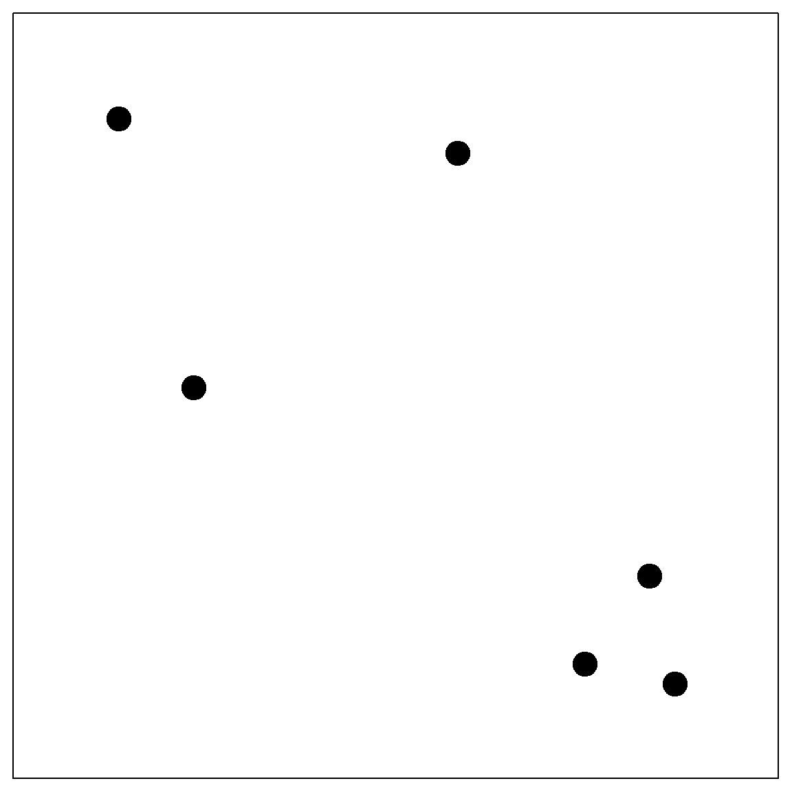
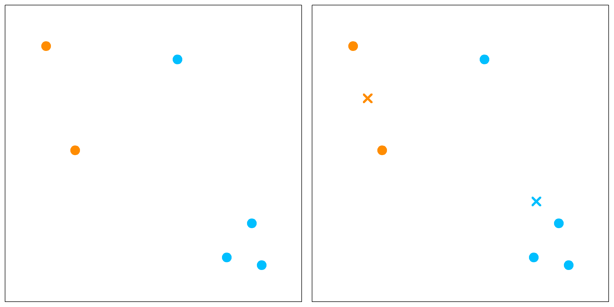

Chapter 5 Ridge Regression
Ridge regression was proposed by Hoerl and Kennard (1970), but is also a special case of Tikhonov regularization. The essential idea is very simple: Knowing the ordinary least squares (OLS) solution, a ridge regression is adding a ridge on the diagonal elements of \(\mathbf{X}^\text{T}\mathbf{X}\) so that it becomes invertible:
\[\widehat{\boldsymbol \beta}^\text{ridge} = (\mathbf{X}^\text{T}\mathbf{X}+ n \lambda \mathbf{I})^{-1} \mathbf{X}^\text{T}\mathbf{y},\] It provides a solution of linear regression when multicollinearity happens, especially when the number of variables is larger than the sample size. Alternatively, this is also the solution of a regularized least square estimator. We add an \(\ell_2\) penalty to the residual sum of squares, i.e.,
\[ \begin{align} \widehat{\boldsymbol \beta}^\text{ridge} =& \mathop{\mathrm{arg\,min}}_{\boldsymbol \beta} (\mathbf{y}- \mathbf{X}\boldsymbol \beta)^\text{T}(\mathbf{y}- \mathbf{X}\boldsymbol \beta) + n \lambda \lVert\boldsymbol \beta\rVert^2\\ =& \mathop{\mathrm{arg\,min}}_{\boldsymbol \beta} \frac{1}{n} \sum_{i=1}^n (y_i - x_i^\text{T}\boldsymbol \beta)^2 + \lambda \sum_{i=1}^n \beta_j^2, \end{align} \]
for some penalty \(\lambda > 0\). Ridge regression is used extensively in genetic analysis to address such difficulties. We will start with a motivation example and then discuss the bias-variance trade-off issue.
5.1 Motivation: Correlated Variables and Convexity
Ridge regression has many advantages. Most notably, it can address highly correlated variables. From an optimization point of view, having highly correlated variables means that the objective function (\(\ell_2\) loss) becomes “flat” along certain directions in the parameter domain. This can be seen from the following example, where the true parameters are both 1s while the estimated parameters concludes almost all effects to the first variable. You can change different seed to observe the variability of these parameter estimates and notice that they are quite large. Instead, if we fit a ridge regression, the parameter estimates are relatively stable.
library(MASS)
set.seed(2)
n = 30
# create highly correlated variables and a linear model
X = mvrnorm(n, c(0, 0), matrix(c(1,0.99, 0.99, 1), 2,2))
y = rnorm(n, mean = X[,1] + X[,2])
# compare parameter estimates
summary(lm(y~X-1))$coef
## Estimate Std. Error t value Pr(>|t|)
## X1 1.8461255 1.294541 1.42608527 0.1648987
## X2 0.0990278 1.321283 0.07494822 0.9407888
# note that the true parameters are all 1's
lm.ridge(y~X-1, lambda=5)
## X1 X2
## 0.9413221 0.8693253The variance of both \(\beta_1\) and \(\beta_2\) are quite large. This is expected because we know from linear regression that the variance of \(\widehat{\boldsymbol \beta}\) is \(\sigma^2 (\mathbf{X}^\text{T}\mathbf{X})^{-1}\). However, since the columns of \(\mathbf{X}\) are highly correlated, the smallest eigenvalue of \(\mathbf{X}^\text{T}\mathbf{X}\) is close to 0, making the largest eigenvalue of \((\mathbf{X}^\text{T}\mathbf{X})^{-1}\) very large. This can also be interpreted through an optimization point of view. The objective function for an OLS estimator is demonstrated in the following.
beta1 <- seq(0, 3, 0.005)
beta2 <- seq(-1, 2, 0.005)
allbeta <- data.matrix(expand.grid(beta1, beta2))
rss <- matrix(apply(allbeta, 1, function(b, X, y) sum((y - X %*% b)^2), X, y),
length(beta1), length(beta2))
# quantile levels for drawing contour
quanlvl = c(0.01, 0.025, 0.05, 0.2, 0.5, 0.75)
# plot the contour
contour(beta1, beta2, rss, levels = quantile(rss, quanlvl))
box()
# the truth
points(1, 1, pch = 19, col = "red", cex = 2)
# the data
betahat <- coef(lm(y~X-1))
points(betahat[1], betahat[2], pch = 19, col = "blue", cex = 2)
As an alternative, if we add a ridge regression penalty, the contour is forced to be more convex due to the added eigenvalues. Here is a plot of the Ridge \(\ell_2\) penalty.

Hence, by adding this to the OLS objective function, the solution is more stable. This may be interpreted in several different ways such as: 1) the objective function is more convex; 2) the variance of the estimator is smaller. However, this causes some bias too. Choosing the tuning parameter is a balance of the bias-variance trade-off, which will be discussed in the following.
par(mfrow=c(1, 2))
# adding a L2 penalty to the objective function
rss <- matrix(apply(allbeta, 1, function(b, X, y) sum((y - X %*% b)^2) + b %*% b, X, y),
length(beta1), length(beta2))
# the ridge solution
bh = solve(t(X) %*% X + diag(2)) %*% t(X) %*% y
contour(beta1, beta2, rss, levels = quantile(rss, quanlvl))
points(1, 1, pch = 19, col = "red", cex = 2)
points(bh[1], bh[2], pch = 19, col = "blue", cex = 2)
box()
# adding a larger penalty
rss <- matrix(apply(allbeta, 1, function(b, X, y) sum((y - X %*% b)^2) + 10*b %*% b, X, y),
length(beta1), length(beta2))
bh = solve(t(X) %*% X + 10*diag(2)) %*% t(X) %*% y
# the ridge solution
contour(beta1, beta2, rss, levels = quantile(rss, quanlvl))
points(1, 1, pch = 19, col = "red", cex = 2)
points(bh[1], bh[2], pch = 19, col = "blue", cex = 2)
box()
5.2 Bias and Variance of Ridge Regression
We can set a relationship between Ridge and OLS, assuming that the OLS estimator exist.
\[\begin{align} \widehat{\boldsymbol \beta}^\text{ridge} =& (\mathbf{X}^\text{T}\mathbf{X}+ n\lambda \mathbf{I})^{-1} \mathbf{X}^\text{T}\mathbf{y}\\ =& (\mathbf{X}^\text{T}\mathbf{X}+ n\lambda \mathbf{I})^{-1} (\mathbf{X}^\text{T}\mathbf{X}) \color{OrangeRed}{(\mathbf{X}^\text{T}\mathbf{X})^{-1} \mathbf{X}^\text{T}\mathbf{y}}\\ =& (\mathbf{X}^\text{T}\mathbf{X}+ n\lambda \mathbf{I})^{-1} (\mathbf{X}^\text{T}\mathbf{X}) \color{OrangeRed}{\widehat{\boldsymbol \beta}^\text{ols}} \end{align}\]
This leads to a biased estimator (since the OLS estimator is unbiased) if we use any nonzero \(\lambda\).
- As \(\lambda \rightarrow 0\), the ridge solution is eventually the same as OLS
- As \(\lambda \rightarrow \infty\), \(\widehat{\boldsymbol \beta}^\text{ridge} \rightarrow 0\)
It can be easier to analyze a case with \(\mathbf{X}^\text{T}\mathbf{X}= n \mathbf{I}\), i.e, with standardized and orthogonal columns in \(\mathbf{X}\). Note that in this case, each \(\beta_j^{\text{ols}}\) is just the projection of \(\mathbf{y}\) onto \(\mathbf{x}_j\), the \(j\)th column of the design matrix. We also have
\[\begin{align} \widehat{\boldsymbol \beta}^\text{ridge} =& (\mathbf{X}^\text{T}\mathbf{X}+ n\lambda \mathbf{I})^{-1} (\mathbf{X}^\text{T}\mathbf{X}) \widehat{\boldsymbol \beta}^\text{ols}\\ =& (\mathbf{I}+ \lambda \mathbf{I})^{-1}\widehat{\boldsymbol \beta}^\text{ols}\\ =& (1 + \lambda)^{-1} \widehat{\boldsymbol \beta}^\text{ols}\\ \Longrightarrow \beta_j^{\text{ridge}} =& \frac{1}{1 + \lambda} \beta_j^\text{ols} \end{align}\]
Then in this case, the bias and variance of the ridge estimator can be explicitly expressed:
- \(\text{Bias}(\beta_j^{\text{ridge}}) = \frac{-\lambda}{1 + \lambda} \beta_j^\text{ols}\) (not zero)
- \(\text{Var}(\beta_j^{\text{ridge}}) = \frac{1}{(1 + \lambda)^2} \text{Var}(\beta_j^\text{ols})\) (reduced from OLS)
Of course, we can ask the question: is it worth it? We could proceed with a simple analysis of the MSE of \(\beta\) (dropping \(j\)):
\[\begin{align} \text{MSE}(\beta) &= \text{E}(\widehat{\beta} - \beta)^2 \\ &= \text{E}[\widehat{\beta} - \text{E}(\widehat{\beta})]^2 + \text{E}[\widehat{\beta} - \beta]^2 \\ &= \text{E}[\widehat{\beta} - \text{E}(\widehat{\beta})]^2 + 0 + [\text{E}(\widehat{\beta}) - \beta]^2 \\ &= \text{Var}(\widehat{\beta}) + \text{Bias}^2. \end{align}\]
This bias-variance breakdown formula will appear multiple times. Now, plug-in the results developed earlier based on the orthogonal design matrix, and investigate the derivative of the MSE of the Ridge estimator, we have
\[\begin{align} \frac{\partial \text{MSE}(\widehat{\beta}^\text{ridge})}{ \partial \beta} =& \frac{\partial}{\partial \beta} \left[ \frac{1}{(1+\lambda)^2} \text{Var}(\widehat{\beta}^\text{ols}) + \frac{\lambda^2}{(1 + \lambda)^2} \beta^2 \right] \\ =& \frac{2}{(1+\lambda)^3} \left[ \lambda \beta^2 - \text{Var}(\widehat{\beta}^\text{ols}) \right] \end{align}\]
Note that when the derivative is negative, increasing \(\lambda\) would decrease the MSE. This implies that we can reduce the MSE by choosing a small \(\lambda\). Of course the situation is much more involving when the columns in \(\mathbf{X}\) are not orthogonal. However, the following analysis helps to understand a non-orthogonal case. It is essentially re-organizing the columns of \(\mathbf{X}\) into its principle components so that they are still orthogonal.
Let’s first take a singular value decomposition (SVD) of \(\mathbf{X}\), with \(\mathbf{X}= \mathbf{U}\mathbf{D}\mathbf{V}^\text{T}\), then the columns in \(\mathbf{U}\) form an orthonormal basis and columns in \(\mathbf{U}\mathbf{D}\) are the principal components and \(\mathbf{V}\) defines the principle directions. In addition, we have \(n \widehat{\boldsymbol \Sigma} = \mathbf{X}^\text{T}\mathbf{X}= \mathbf{V}\mathbf{D}^2 \mathbf{V}^\text{T}\). Assuming that \(p < n\), and \(\mathbf{X}\) has full column ranks, then the Ridge estimator fitted \(\mathbf{y}\) value can be decomposed as
\[\begin{align} \widehat{\mathbf{y}}^\text{ridge} =& \mathbf{X}\widehat{\beta}^\text{ridge} \\ =& \mathbf{X}(\mathbf{X}^\text{T}\mathbf{X}+ n \lambda)^{-1} \mathbf{X}^\text{T}\mathbf{y}\\ =& \mathbf{U}\mathbf{D}\mathbf{V}^\text{T}( \mathbf{V}\mathbf{D}^2 \mathbf{V}^\text{T}+ n \lambda \mathbf{V}\mathbf{V}^\text{T})^{-1} \mathbf{V}\mathbf{D}\mathbf{U}^\text{T}\mathbf{y}\\ =& \mathbf{U}\mathbf{D}^2 (n \lambda + \mathbf{D}^2)^{-1} \mathbf{U}^\text{T}\mathbf{y}\\ =& \sum_{j = 1}^p \mathbf{u}_j \left( \frac{d_j^2}{n \lambda + d_j^2} \mathbf{u}_j^\text{T}\mathbf{y}\right), \end{align}\]
where \(d_j\) is the \(j\)th eigenvalue of the PCA. Hence, the Ridge regression fitted value can be understood as
- Perform PCA of \(\mathbf{X}\)
- Project \(\mathbf{y}\) onto the PCs
- Shrink the projection \(\mathbf{u}_j^\text{T}\mathbf{y}\) by the factor \(d_j^2 / (n \lambda + d_j^2)\)
- Reassemble the PCs using all the shrunken length